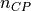
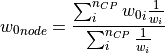
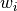
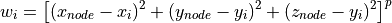

Interpolate (compmech.interpolate)¶
This module includes some interpolation utilities that will be used in other modules.
-
compmech.interpolate.inv_weighted(data, mesh, num_sub, col, ncp=5, power_parameter=2)[source]¶ Interpolates the values taken at one group of points into another using an inverse-weighted algorithm
In the inverse-weighted algorithm a number of  measured points of the input parameter
datathat are closest to a given node in the input parametermeshare found and the imperfection value of this node (represented by the normal displacement ) is
calculated as follows:
) is
calculated as follows:
where  is the imperfection at each measured point, calculated as:

with
 being a power parameter that when increased will increase the
relative influence of a closest point.
being a power parameter that when increased will increase the
relative influence of a closest point.- Parameters
- datanumpy.ndarray, shape (N, ndim+1)
The data or an array containing the imperfection file. The values to be interpolated must be in the last column.
- meshnumpy.ndarray, shape (M, ndim)
The new coordinates where the values will be interpolated to.
- num_subint
The number of sub-sets used during the interpolation. The points are divided in sub-sets to increase the algorithm’s efficiency.
- colint
The index of the column to be used in order to divide the data in sub-sets. Note that the first column index is
0.- ncpint, optional
Number of closest points used in the inverse-weighted interpolation.
- power_parameterfloat, optional
Power of inverse weighted interpolation function.
- Returns
- ansnumpy.ndarray
A 1-D array with the interpolated values. The size of this array is
mesh.shape[0].
-
compmech.interpolate.interp(x, xp, fp, left=None, right=None, period=None)[source]¶ One-dimensional linear interpolation
Returns the one-dimensional piecewise linear interpolant to a function with given values at discrete data-points.
Note
This function has been incorporated in NumPy >= 1.10.0 and will be soon removed from here.
- Parameters
- xarray_like
The x-coordinates of the interpolated values.
- xp1-D sequence of floats
The x-coordinates of the data points, must be increasing if argument
periodis not specified. Otherwise,xpis internally sorted after normalizing the periodic boundaries withxp = xp % period.- fp1-D sequence of floats
The y-coordinates of the data points, same length as
xp.- leftfloat, optional
Value to return for
x < xp[0], default isfp[0].- rightfloat, optional
Value to return for
x > xp[-1], default isfp[-1].- periodfloat, optional
A period for the x-coordinates. This parameter allows the proper interpolation of angular x-coordinates. Parameters
leftandrightare ignored ifperiodis specified.
- Returns
- y{float, ndarray}
The interpolated values, same shape as
x.
- Raises
- ValueError
If
xpandfphave different length Ifxporfpare not 1-D sequences Ifperiod==0
Notes
Does not check that the x-coordinate sequence
xpis increasing. Ifxpis not increasing, the results are nonsense. A simple check for increasing is:np.all(np.diff(xp) > 0)
Examples
>>> xp = [1, 2, 3] >>> fp = [3, 2, 0] >>> interp(2.5, xp, fp) 1.0 >>> interp([0, 1, 1.5, 2.72, 3.14], xp, fp) array([ 3. , 3. , 2.5 , 0.56, 0. ]) >>> UNDEF = -99.0 >>> interp(3.14, xp, fp, right=UNDEF) -99.0
Plot an interpolant to the sine function:
>>> x = np.linspace(0, 2*np.pi, 10) >>> y = np.sin(x) >>> xvals = np.linspace(0, 2*np.pi, 50) >>> yinterp = interp(xvals, x, y) >>> import matplotlib.pyplot as plt >>> plt.plot(x, y, 'o') [<matplotlib.lines.Line2D object at 0x...>] >>> plt.plot(xvals, yinterp, '-x') [<matplotlib.lines.Line2D object at 0x...>] >>> plt.show()
Interpolation with periodic x-coordinates:
>>> x = [-180, -170, -185, 185, -10, -5, 0, 365] >>> xp = [190, -190, 350, -350] >>> fp = [5, 10, 3, 4] >>> interp(x, xp, fp, period=360) array([7.5, 5., 8.75, 6.25, 3., 3.25, 3.5, 3.75])